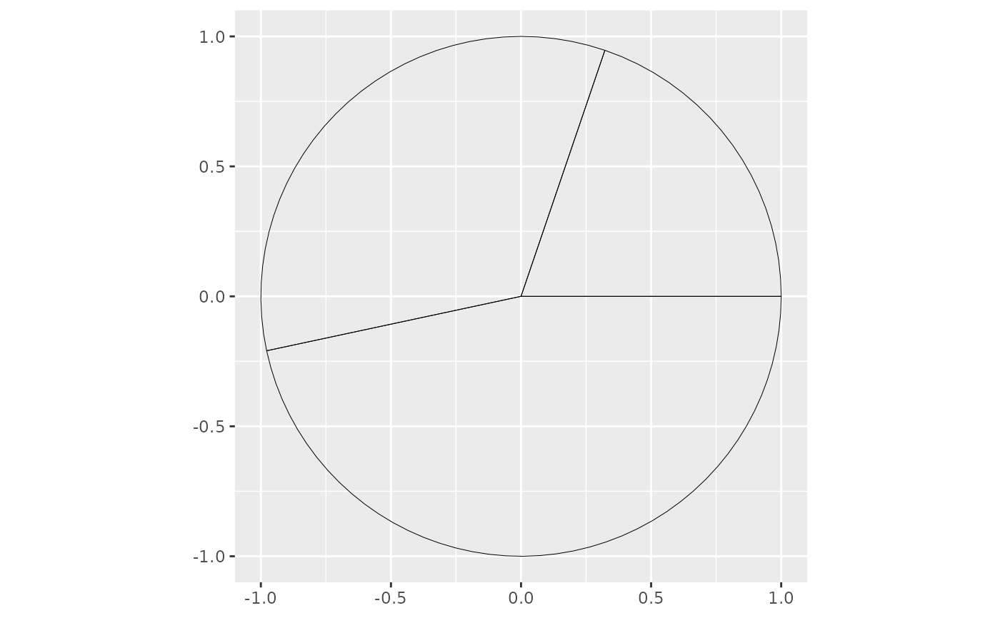

There are two arguments absolutely needed in aes() mappings:
catA discrete categories vector.valA numerical values vector.
Usage
geom_slice(
mapping = NULL,
data = NULL,
show.legend = NA,
na.rm = FALSE,
inherit.aes = TRUE,
slice_angle = 180,
init_angle = 0,
x0 = 0,
y0 = 0,
radius = 1,
color = "black",
alpha = 1,
linewidth = 0.5,
slice_position = NA,
labels_with_tick = F,
labels_family = "",
labels_size = 5,
labels_col = "black",
labels_hjust = 0.5,
labels_vjust = 0.5,
labels_fontface = "plain",
labels_lineheight = 1.2,
tick_lwd = 1,
...
)Arguments
- mapping
Set of aesthetic mappings created by
aes()oraes_(). If specified andinherit.aes = TRUE(the default), it is combined with the default mapping at the top level of the plot. You must supplymappingif there is no plot mapping.- data
to be displayed in this layer
- show.legend
logical. Should this layer be included in the legends?
NA, the default, includes if any aesthetics are mapped.FALSEnever includes, andTRUEalways includes. It can also be a named logical vector to finely select the aesthetics to display.- na.rm
If
FALSE, the default, missing values are removed with a warning. IfTRUE, missing values are silently removed.- inherit.aes
If
FALSE, overrides the default aesthetics, rather than combining with them.- slice_angle
Pie slice angle
- init_angle
Starting angle
- x0
Init position x
- y0
Init position y
- radius
Driving circle radius
- color
Plot border colour
- alpha
Filling colour transparency [0,1]
- linewidth
Plot border size
- slice_position
Pie slice position
- labels_with_tick
TRUEif we want tick when labelling categories- labels_family
Labels font family
- labels_size
Labels font size
- labels_col
Labels colour
- labels_hjust
Labels horizontal adjusting
- labels_vjust
Labels vertical adjusting
- labels_fontface
Labels font face
- labels_lineheight
Labels line height
- tick_lwd
Ticks Size
- ...
other arguments passed on to
layer().
Examples
my_df <- data.frame(cat = c("Apple", "Banana", "Pineapple"), val = c(2.65, 4.5, 6.25))
my_df |>
ggplot2::ggplot() +
geom_pie(ggplot2::aes(cat = cat, val = val)) +
ggplot2::coord_equal()
